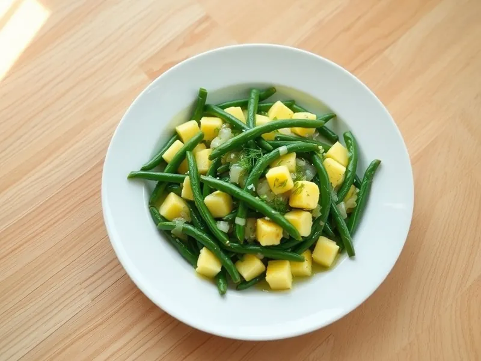

Фото: Иллюстрация ИИ, Cloudflare Workers AI
Стручковая фасоль с яйцом
Стручковая фасоль с луком, обжаренная и залитая яйцами
20 мин2 порц.330 ккал на порциюБ 19 · Ж 23 · У 13Русская кухня
Продукты на 2 порц.
- Стручковая фасоль400 г
- Яйцо куриное4 шт
- Лук репчатый1 шт
- Растительное масло1 ст. л.
- Чеснок по желанию1 зуб.
- Вода1500 мл
- Соль1 ч. л.
- Перец чёрный молотыйпо вкусу
- Укроп по желаниюпо вкусу
Как готовить
- Если фасоль свежая, обрежьте хвостики и нарежьте по 3-4 см. Лук нарежьте полукольцами.
- Отварите фасоль в кипящей подсоленной воде 5 минут (замороженную не размораживайте), откиньте на дуршлаг.
- Обжарьте лук в масле на среднем огне 4 минуты до мягкости, добавьте фасоль и жарьте 4-5 минут, помешивая.
- Взбейте яйца с солью и перцем, залейте фасоль и готовьте на слабом огне 3-4 минуты, помешивая, пока яйца не схватятся мягкими хлопьями.
- Добавьте давленый чеснок и укроп, перемешайте и подавайте.
Совет. Сырую стручковую фасоль есть нельзя, поэтому не пропускайте отваривание даже у свежей.